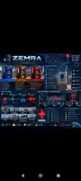
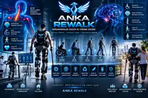
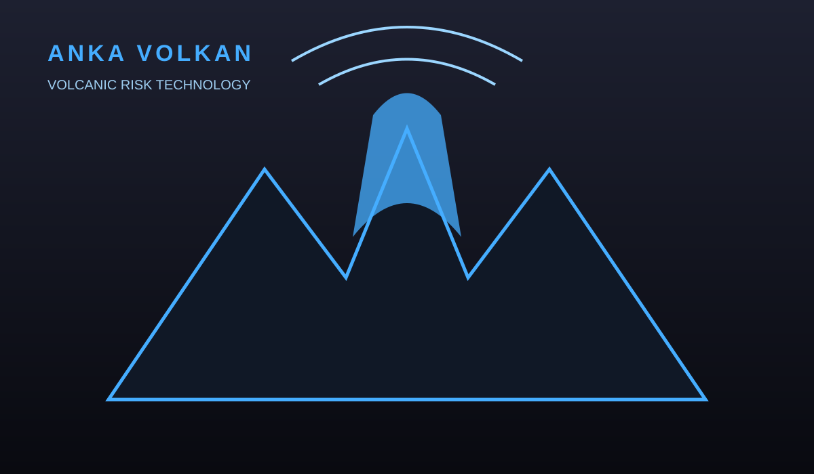
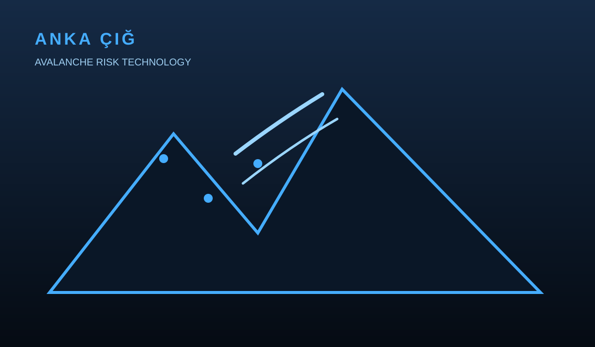

01 · MOBİLİTE
01 · MOBİLİTE
ANKA HYDRA
Şehir aracı, SUV, performans, ticari araç, VAN, BUS, motosiklet, ambulans ve yarış araçlarını kapsayan mobilite ailesi.
ANKA PROJECTS; mobilite, tarım, motor teknolojileri, hareket desteği ve afet çözümlerini tek çatı altında geliştiren proje platformudur.
Projeleri GörHer proje, ne üzerinde çalışıldığını ilk bakışta anlatan sade ve net bir görselle sunulur. Hassas teknik ayrıntılar kamuya açık sayfada paylaşılmaz.
Şehir aracı, SUV, performans, ticari araç, VAN, BUS, motosiklet, ambulans ve yarış araçlarını kapsayan mobilite ailesi.

Deprem ve afet odaklı erken farkındalık, izleme ve destek çözümleri için geliştirilen proje.

Akıllı tarım, hedefli sulama ve kaynak verimliliği odağında geliştirilen proje.

Mevcut dizel motorlarda verimlilik, çekiş ve emisyon hedefleri üzerine geliştirilen optimizasyon projesi.

Hareket kısıtlı bireylerin yürüme ve günlük yaşam desteğine yönelik giyilebilir teknoloji projesi.

Sel ve taşkın risklerine yönelik farkındalık, izleme ve destek yaklaşımı.

Volkanik risklerin izlenmesi ve erken farkındalık amacıyla geliştirilen proje.

Çığ risklerinin izlenmesi, farkındalık ve destek çözümleri için geliştirilen proje.
Site, ziyaretçilerin gizliliğine önem verir. Kamuya açık sayfalarda yalnızca projelerin genel tanıtım bilgileri paylaşılır. Özel teknik bilgiler, patent kapsamındaki ayrıntılar ve ticari sırlar yayınlanmaz.
İletişim sırasında gönderilen bilgiler yalnızca ilgili iletişim amacıyla değerlendirilir.
ANKA PROJECTS kapsamındaki proje adları, konseptler, tasarımlar ve geliştirme çalışmaları fikrî mülkiyet haklarına tabi olabilir. Yazılı izin olmadan kopyalanması veya ticari amaçla kullanılması uygun değildir.
Site içeriği proje tanıtımı ve bilgilendirme amacıyla sunulur; üretim talimatı veya teknik doğrulama yerine geçmez.